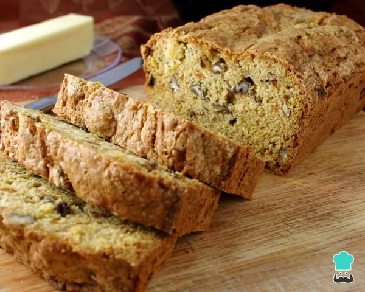
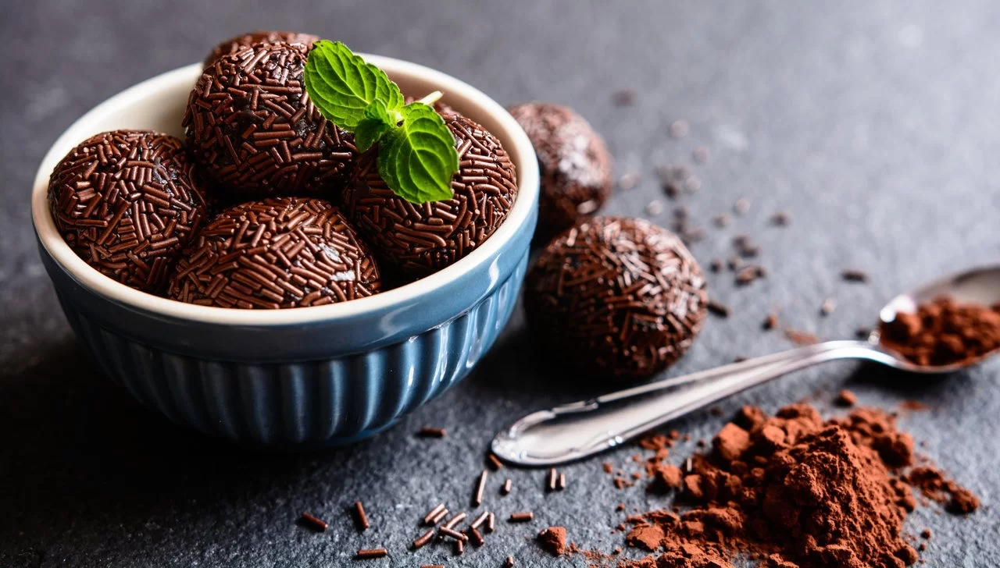

|  |
Pão de micro-ondasIngredientes (1 porção) ovo 1 ovo farelo de aveia 2 colheres de farelo de aveia 2 colheres de iogurte desnatado ou água fermento em pó químico 1 colher de chá fermento Modo de preparo : 3min 1 Misture todos os ingredientes e leve ao micro-ondas por 2 minutos e 20 segundos. 2 Recheie a gosto (pode ser com frango desfiado, ricota, tomate, peito de peru) |
|  |
Brigadeiro fit de batata-doceIngredientes (40 porções) batata-doce 500 g de batata-doce óleo de coco 2 colheres (sopa) de óleo de coco cacau em pó 4 colheres (sopa) de cacau em pó açúcar mascavo 2 colheres (sopa) de açúcar mascavo leite desnatado 50 ml leite desnatado café instantâneo 1 colher (café) de café solúvel chocolate meio amargo granulado para decorar modo de preparo : 1h 1 Cozinhe as batatas na pressão por aproximadamente 20 minutos. 2 Amasse-as bem. 3 Coloque o purê em uma panela com o cacau, açúcar, café e óleo. 4 Cozinhe e mexa a massa, enquanto acrescenta o leite até ficar homogêneo. 5 Deixar esfriar. 6 Enrolar e passe no chocolate meio amargo granulado |